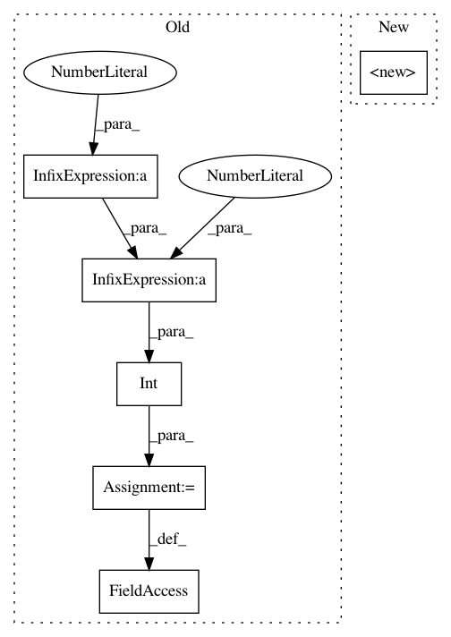

ffd59b08a23494b7c2d21b57ff783a7311b41136,pytorch/pytorchcv/models/others/espnetv2.py,CBR,__init__,#CBR#Any#Any#Any#Any#Any#,177
Before Change
:param stride: stride rate for down-sampling. Default is 1
"""
super().__init__()
padding = int((kernel_size - 1) / 2)
self.conv = nn.Conv2d(
in_channels,
out_channels,
kernel_size,
stride=stride,
padding=padding,
bias=False,
groups=groups)
self.bn = nn.BatchNorm2d(out_channels)
self.act = nn.PReLU(out_channels)
def forward(self, input):
After Change
last_ordinals=0,
dual_path_scheme=(lambda module, x1, x2: module(x1, x2)),
dual_path_scheme_ordinal=(lambda module, x1, x2: (module(x1), x2))):
super(DualPathSequential, self).__init__()
self.return_two = return_two
self.first_ordinals = first_ordinals
self.last_ordinals = last_ordinals
self.dual_path_scheme = dual_path_scheme
In pattern: SUPERPATTERN
Frequency: 3
Non-data size: 6
Instances
Project Name: osmr/imgclsmob
Commit Name: ffd59b08a23494b7c2d21b57ff783a7311b41136
Time: 2019-02-20
Author: osemery@gmail.com
File Name: pytorch/pytorchcv/models/others/espnetv2.py
Class Name: CBR
Method Name: __init__
Project Name: geomstats/geomstats
Commit Name: 21445b6052f3b1ce1a1210ff6d402dd0ad71be0a
Time: 2020-11-17
Author: nicolas.guigui@inria.fr
File Name: geomstats/geometry/special_euclidean.py
Class Name: _SpecialEuclideanMatrices
Method Name: __init__
Project Name: geomstats/geomstats
Commit Name: 932defac3e34ee7cf98d44e60d7c979cc2fe01b9
Time: 2020-04-20
Author: nicolas.guigui@inria.fr
File Name: geomstats/geometry/special_orthogonal.py
Class Name: SpecialOrthogonal
Method Name: __init__